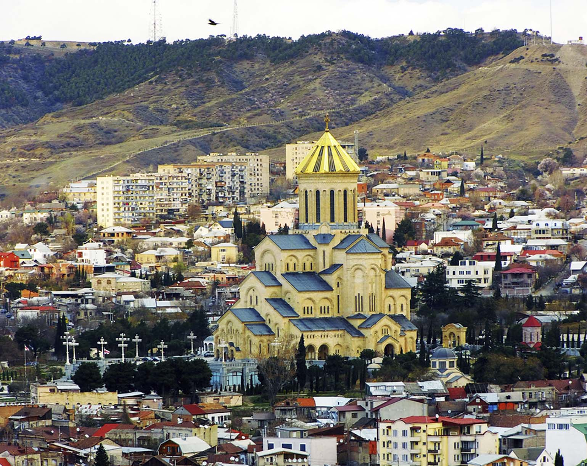
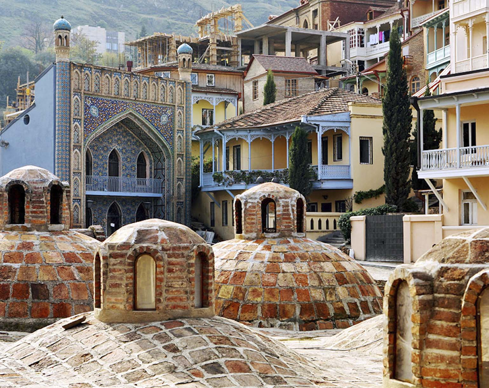

Тбилиси
Тбилиси, столица Грузии – невероятно колоритный город, впечатляющий своими необычными панорамами, обилием зелени и количеством достопримечательностей. Не меньшее удовольствие доставляет замечательная кухня, уютные отели и удивительно радушная атмосфера: тбилисцы относятся к туристам как к дорогим гостям, стараясь произвести самое приятное впечатление – в лучших традициях кавказского гостеприимства.
Тбилиси расположен в центре Восточной Грузии в котловине, ограниченной отрогами Триалетского хребта, Сагурамского хребета и Иорского нагорья. Климат - умеренно-континентальный с относительно жарким летом и прохладной зимой. Благодаря близости к тёплым морям (Чёрное и Каспийское) и Большому Кавказскому хребту, который блокирует вторжение воздушных масс, климат Тбилиси теплее, чем в городах на тех же широтах. Среднегодовая температура составляет 12,7 градусов. Самый холодный месяц январь с температурой около 0. Средняя температура лета более 20 градусов.
Старый город - сердце Тбилиси. Этот район расположен между площадью Свободы, древними развалинами крепости Нарикала и Курой. Несмотря на то, что Тбилиси на протяжении своей истории несколько раз был разорен, исторический центр сохранился на удивление хорошо и сохранил особую атмосферу и очарование.
Старый Тбилиси - это район узких улочек, на которых расположены древние церкви, старинные дома с милыми деревянными балкончиками и тихими двориками. Эта старинная архитектура немного напоминает архитектуру эпохи Возрождения и Италии. В старом городе также можно увидеть ряд эклектичных достопримечательностей и современных архитектурных элементов. Исторический центр Тбилиси полон скрытых сокровищ и интересных мест, которые можно открыть при простой прогулке.
Мать - Грузия или Картлис Деда - 20-метровая алюминиевая статуя недалеко от крепости Нарикала. Является символом не только Тбилиси, но и всей страны. Меч в её руке - для врагов, а чаша с вином - для друзей.
Абанотубани - один из самых очаровательных районов Тбилиси, известный своими банями на естественных серных термальных источниках. В этом районе можно найти много бюджетных отелей, прогуляться вдоль старого канала и полюбоваться крепостью Нарикала.
Анчисхати - старейшая церковь Тбилиси, построенная в 6 веке при царе Дачи Уджармели. Здание разрушали и восстанавливали несколько раз. Кирпичная колокольня была построена в 17 столетии. Здание построено из туфа и представляет собой трёхнефную базилику с апсидами в форме подковы.